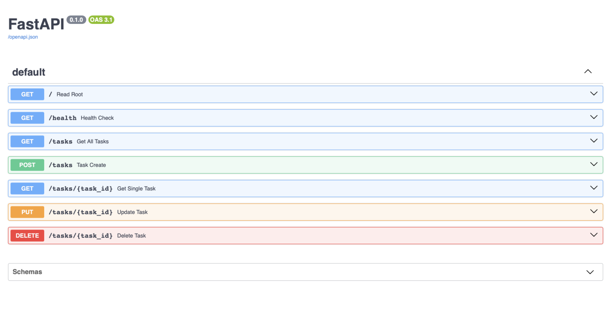

Task Management CRUD API
The Problem
I wanted to build my first real backend — not a tutorial clone, something I'd actually have to debug. Before this, backend concepts like "request," "response," and "endpoint" were abstract to me; I could recite the definitions but they didn't connect to anything concrete in my head. I needed the fundamentals of how a server actually works, because whether I end up employed or building my own product, that gap doesn't stay optional for long.
What I Did (and What I Decided)
I built a five-endpoint CRUD API in Python with FastAPI — create, read, update, and delete tasks, backed by in-memory storage, documented through Swagger UI. I wrote every endpoint by hand before touching AI-generated code, because I wanted to actually own the decisions: which status code belongs where, what counts as a client error versus a missing resource, how validation should fail.

The generated Swagger UI documenting the five endpoints, providing a visual interface for the FastAPI backend.
That decision paid off in an unplanned way. While reviewing my own PUT and DELETE endpoints, I found that both returned the wrong status code when a task wasn't found — PUT returned 400 instead of 404, and DELETE returned 204 (success) instead of 404 for a request that should have failed. I hadn't done this as an exercise; it was a real bug I introduced myself and then had to catch. Tracing why 404 belongs to "the resource doesn't exist" and 400 belongs to "you sent me something invalid" is what finally made those concepts click — not the definition, but the mistake.
I closed the loop by prompting an AI to build the same API from a written spec, then diffing its output against my own. The AI added a response_model layer I hadn't thought to include, and it silently followed a mistake still sitting in my prompt (it applied 404 to a bad-input case that should have been 400) instead of catching it — proof that a prompt is only as reliable as the person who understood the system well enough to write it correctly.
What Came Of It
I can now look at a status code and know exactly why it's wrong before someone else points it out. That's the real outcome — not the five working endpoints, but being able to read my own errors and correct them without needing an explanation of the underlying concept every time. I think that's mostly how real learning works: you don't understand a system by being told how it works, you understand it by breaking it and finding out why.
View Repository ↗